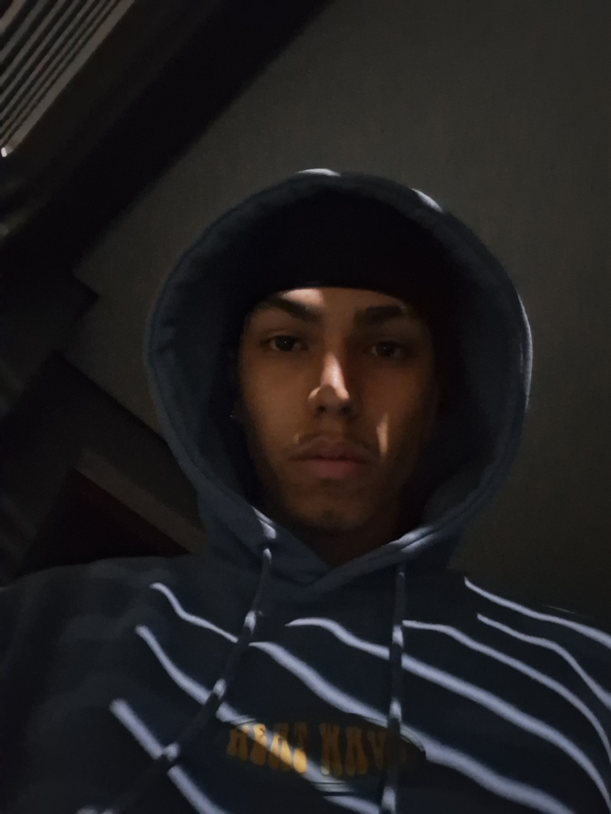
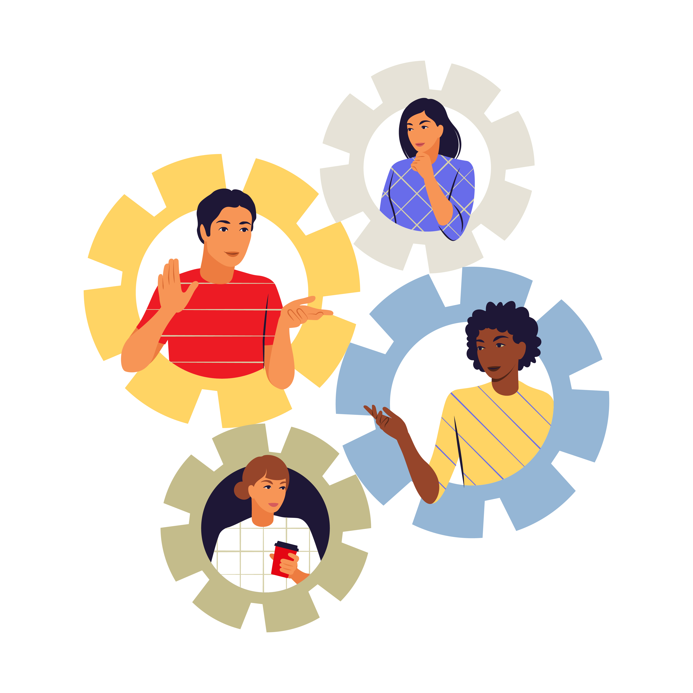
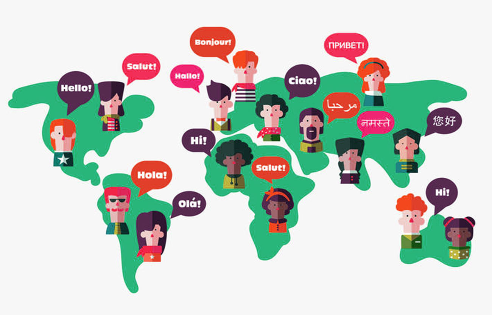

André Russi

André, um jovem de 17 anos apaixonado pelo basquete e pela tecnologia,
atualmente reside em São Caetano do Sul. Desde cedo, encontrou nas quadras
não só competição, mas também paz e crescimento pessoal.
Estudante do ensino médio técnico em TI, André está imerso em códigos, redes
e sistemas.
Esta jornada acadêmica é apenas o começo de um sonho maior: se formar na área
de TI e mergulhar em um mundo de inovação e desafios constantes.
Interesses profissionais
Seus planos futuros incluem explorar novos territórios, literalmente. Ele tem o desejo de morar em outro país,
vendo isso como uma oportunidade não apenas para aprimorar suas habilidades profissionais, mas também para
experimentar diferentes culturas e modos de vida.
Apesar das incertezas do futuro, André está determinado a alcançar seus objetivos, driblando obstáculos no caminho
e aproveitando cada momento da jornada.
Soft Skills
Liderança Criatividade  Colaboração
Hard Skills

Fluência de idioma
Programação
Design gráfico